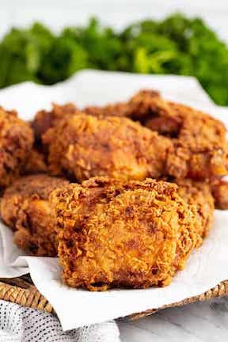

Fried Chicken

Description
If you've wanted to learn how to make crispy fried chicken, this is the recipe for you. Always a picnic favorite, this deep fried chicken recipe is delicious either hot or cold. Kids call it my Kentucky Fried Chicken!
Ingredients
- 4 cups all-purpose flour, divided
- 2 tablespoons garlic salt
- 1 tablespoon paprika
- 3 teaspoons pepper, divided
- 2-1/2 teaspoons poultry seasoning
- 2 large eggs
- 1-1/2 cups water
- 1 teaspoon salt
- 2 broiler/fryer chickens (3-1/2 to 4 pounds each), cut up
- Oil for deep-fat frying
Steps
- In a large shallow dish, combine 2-2/3 cups flour, garlic salt, paprika, 2-1/2 teaspoons pepper and poultry seasoning. In another shallow dish, beat eggs and 1-1/2 cups water; add 1 teaspoon salt and the remaining 1-1/3 cup flour and 1/2 teaspoon pepper. Dip chicken in egg mixture, then place in flour mixture, a few pieces at a time. Turn to coat.
- In a deep-fat fryer, heat oil to 375°. Fry chicken, several pieces at a time, until skin is golden brown and a thermometer inserted into chicken reads 165°, about 7-8 minutes on each side. Drain on paper towels.